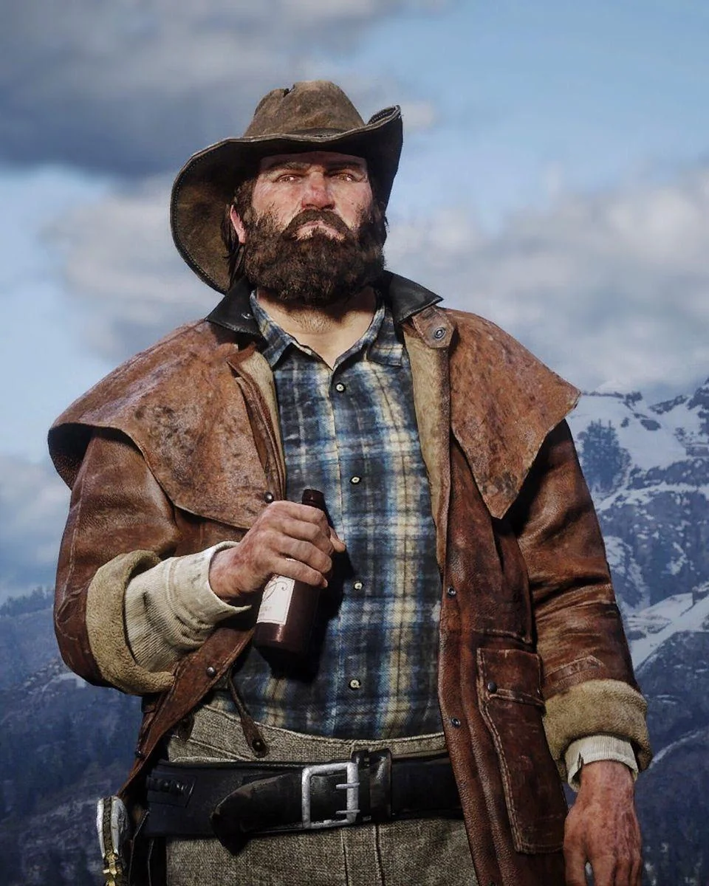
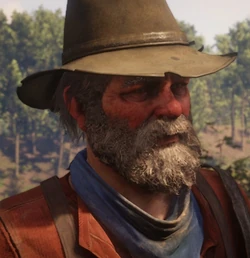
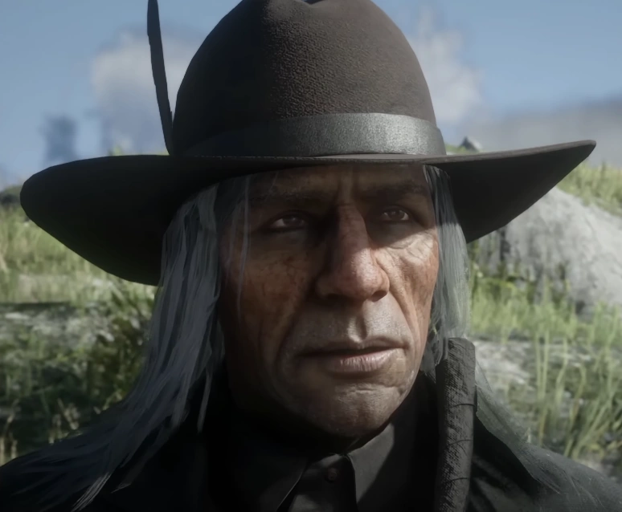

|
Dutch van der Linde |
Dutch van der Linde is a central figure in Red Dead Redemption 2 and the charismatic leader of the Van der Linde gang. He doesn’t view himself as a criminal, but as a revolutionary fighting against a corrupt and oppressive system. In his early years, Dutch dreamed of creating a free and wild utopia in the West—believing that with enough struggle and sacrifice, he could change the world.
He took in orphans and lost souls like Arthur Morgan and John Marston, teaching them to read and encouraging self-worth and independence. Dutch is idealistic, anarchic, and deeply charismatic, but as the modern world closes in, the cracks in his vision—and his sanity—begin to show. |
|
Hosea Matthews |
Hosea Matthews is a key character in Red Dead Redemption 2 and serves as Dutch’s longtime friend and second-in-command of the Van der Linde gang. A master con artist, gentleman, and seasoned thief, Hosea has been at Dutch’s side for over twenty years. The two first met while trying to rob each other on the road to Chicago and quickly bonded over their shared ideals, becoming close partners in crime.
Smart and quick-witted, Hosea has a talent for talking his way into—and out of—almost any situation. Though still sharp, he's beginning to feel the weight of age catching up with him. |
|
Sadie Adler |
Sadie Adler is a major character in Red Dead Redemption 2 and a recent addition to the Van der Linde gang. After witnessing her husband Jake’s murder during a raid on their home, Sadie is consumed by a desire for revenge. Raised on rugged mountain land, she’s tough, self-reliant, and skilled in riding, hunting, and shooting.
She and Jake shared all the work on their farm until tragedy turned her world upside down. Fearless, relentless, and fiercely independent, Sadie is not someone to be crossed—but she’s deeply loyal to those she cares about. |
|
Charles Smith |
Charles Smith is a central character in Red Dead Redemption 2 and a recent recruit to the Van der Linde gang. Quiet and reserved, Charles is highly skilled in everything he does. Born to a Native American mother and African American father, he’s spent his life on the move, never truly feeling like he belongs anywhere.
He joined Dutch’s gang because he connected with their sense of loyalty and found a place where he could finally fit in. A master tracker and hunter, Charles is a principled, honest man—calm and compassionate, yet deadly when necessary. He struggles to hold onto his values in a world that often rejects them. |
|
Micah Bell |
Micah Bell III is a central character and the main antagonist of Red Dead Redemption 2. A career criminal and hitman, Micah joined Dutch’s gang in 1898, claiming to have met Dutch after saving him during a bar fight over stolen gold.
Coming from a long line of notorious criminals—his father and grandfather both named Micah Bell, with his father wanted for murder in five counties—Micah is wild, unpredictable, and nihilistic. He thrives on chaos and is deadly skilled in gunfights.
|
|  |
Bill Williamson |
Bill Williamson, born Marion Williamson, is a key member and enforcer of the Van der Linde gang in Red Dead Redemption 2. After being dishonorably discharged from the U.S. Army in his early twenties for attempted murder and misconduct, Bill descended into a violent life of drinking, intimidation, and crime.
Dutch found him around 1893, took him under his wing, and helped steer him away from self-destruction. Hot-headed and quick to anger, Bill is often the butt of jokes within the gang. He acts impulsively but is fiercely loyal, tough, and always ready for a fight. |
|
Javier Escuella |
Javier Escuella is a central character in Red Dead Redemption 2 and an enforcer of the Van der Linde gang. A notorious bounty hunter and Mexican revolutionary from Nuevo Paraíso, Javier was forced to flee his homeland after killing a high-ranking army officer over a woman, unable to return until the political situation changes.
He joined the gang around 1895 and quickly connected with Dutch’s ideals. Passionate and deeply loyal—sometimes to a fault—Javier is one of Dutch’s most reliable members. He also takes great pride in his appearance and is always impeccably dressed. |
|
Abigail Roberts |
Abigail Roberts is a central character in Red Dead Redemption 2. Raised as an orphan, she survived a tough life in dive bars and brothels across the West. Strong-willed, straightforward, and resilient, Abigail knows what it takes to survive against all odds.
Introduced to Dutch’s gang by Uncle in 1894, she soon became pregnant. Her son Jack is her greatest pride and motivation, and she’s determined to give him a better, more loving childhood—no matter what. |
 |
Jack Marston |
Jack Marston is a central character in Red Dead Redemption 2 and the son of Abigail and John Marston. Born and raised within the gang, Jack has been protected from its darker side as much as possible. He feels fortunate to have a loving mother and many aunts and uncles to care for him, though he wishes he could spend more time with his father and have other children to play with.
Jack is kind, intelligent, and independent, with a deep love for nature and the outdoors. |
|
Lenny Summers |
Lenny Summers is a major character in Red Dead Redemption 2 and a newly recruited enforcer of the Van der Linde gang. At just fifteen, Lenny went on the run for murder after defending himself when some drunks attacked and killed his father. Raised by well-educated family members, he received a good education and grew up smart, capable, and ambitious.
Lenny is eager to contribute and appreciates being part of a community where he’s valued for his skills rather than judged by his appearance. |
|
Leopold Strauss |
Leopold Strauss is a major character in Red Dead Redemption 2 and a member of the Van der Linde gang. He manages the gang’s finances and runs their money-lending operations. Serious, somewhat secretive, and unemotional, Strauss has all the qualities of a skilled loan shark.
Born into poverty in Vienna within the Austro-Hungarian Empire, he faced serious health issues as a child. At 17, he was sent to the New World, where years of scamming led him to join Dutch’s gang for protection. He has remained loyal to Dutch ever since. |
|  |
Uncle |
Uncle is a major character in Red Dead Redemption 2 and a longtime member of the Van der Linde gang. Known as a hanger-on and a good-time guy, Uncle is always nearby when there’s whiskey flowing but mysteriously absent when work needs doing. No one is sure how old he is or if he’s really anyone’s uncle.
He’s lived a colorful life, full of wild stories about many wives and travels around the world. He also claims to suffer from terminal lumbago. If he weren’t so entertaining, Dutch would have kicked him out long ago.
|
|
Sean MacGuire |
Sean MacGuire is a supporting character in Red Dead Redemption 2 and an enforcer of the Van der Linde gang. A cocky young Irish thief and stick-up man, Sean comes from a long line of criminals and political rebels. His father, a wanted man, fled with him to America but was later killed by British pursuers.
Sean first crossed paths with Dutch and Hosea in North Elizabeth when he unsuccessfully tried to steal Dutch’s pocket watch. Bold and brash, Sean loves to stir things up and always wants a share of the action, sometimes believing in himself a bit too much.
|
|
Simon Pearson |
Simon Pearson is a supporting character in Red Dead Redemption 2 and a member of the Van der Linde gang. He serves as the gang’s butcher and camp cook. Pearson spent some time at sea, a period he enjoys talking about at length. Coming from a family of sperm whale hunters, he planned to follow their path, but by the time he finished school, whale oil had lost its value.
Heading west, he got into trouble with some men shaking him down for money. Dutch found him at his lowest and took him under his wing. Loud and jovial, Pearson often hides his struggles behind a cheerful facade, somewhat in denial about how his life has changed.
|
 |
Susan Grimshaw |
Susan Grimshaw is a supporting character in Red Dead Redemption 2 and a key member of the Van der Linde gang. She is the undisputed authority and enforcer of order within the gang’s camp—without her leadership, everything would have fallen apart long ago.
Having been with the gang almost as long as Arthur, Susan once had a relationship with Dutch. Even after it ended, they remain close partners in crime. Years on the outlaw trail have made her a bit jaded, but she embraces it. Tenacious and strong-willed, Susan tolerates no nonsense.
|
|
Molly O'Shea |
Molly O'Shea is a supporting character in Red Dead Redemption 2 and Dutch van der Linde’s lover. A Dublin native, Molly is the focus of Dutch’s affection but struggles with the harsh life on the run, which is wearing on her.
She claims to come from a well-off Irish family who moved to America seeking adventure and excitement. While she found excitement with Dutch, she wants more than he can or is willing to give. Seeing herself as above the other gang members hasn’t made her very popular in camp.
|
|
Mary-Beth Gaskill |
Mary-Beth Gaskill is a supporting character in Red Dead Redemption 2 and a member of the Van der Linde gang. Kind and good-natured, she’s the perfect criminal—by the time people realize they’ve been tricked, she’s already gone with the money.
Orphaned at a young age after her mother died of typhoid, Mary-Beth ran away from the orphanage to survive on her own and quickly gained a reputation as an expert pickpocket. Smarter and more insightful than she appears, she loves reading and writing, dreaming of becoming a novelist one day.
|
|
Tilly Jackson |
Tilly Jackson is a supporting character in Red Dead Redemption 2 and a member of the Van der Linde gang. An outlaw for nearly as long as she can remember, Tilly was kidnapped from her mother by another gang when she was just 12. After enduring years of abuse, she killed one of the gang members and escaped.
Heading down a dangerous path, she was found by Dutch, who took her in, protected her, and taught her to read. Savvy, resilient, and responsible, Tilly is capable of handling herself and isn’t afraid to speak her mind.
|
|
Orville Swanson |
Orville Swanson is a supporting character in Red Dead Redemption 2 and a member of the Van der Linde gang. Once a clergyman, he has since fallen into a life of debauchery and struggles with many personal demons.
He began using morphine to ease pain a few years ago, but it quickly became a destructive addiction. A broken man who has lost his self-esteem, purpose, and much of his faith, Swanson is painfully aware of his failures. If he hadn’t saved Dutch’s life in the past, the gang likely wouldn’t have kept him around this long.
|
|
Josiah Trelawny |
Josiah Trelawny is a supporting character in Red Dead Redemption 2 and an associate of the Van der Linde gang. A flamboyant magician, conman, and trickster with a taste for luxury, Trelawny is one of the few people Dutch allows to come and go freely.
He often appears out of nowhere with valuable leads, then vanishes like a magic trick. Hard to pin down and not always trustworthy, he nonetheless brings useful information and some much-needed entertainment to the gang. A cockroach in fancy britches, Trelawny can slip into places others cannot.
|
 |
Kieran Duffy |
Kieran Duffy is a supporting character in Red Dead Redemption 2. He serves as a whipping boy and general underling for the rival O'Driscoll Boys gang. Captured by the Van der Linde gang during a raid, Dutch forced him to betray his own people.
Kieran later joined Dutch’s gang but remains caught in a difficult position—hunted by the O'Driscolls and never fully trusted by his new allies. Scruffy and unkempt, he has a stronger bond with horses than with people.
|
|
Karen Jones |
Karen Jones is a supporting character in Red Dead Redemption 2 and a member of the Van der Linde gang. She’s a skilled con artist and sharp shooter who can outdrink almost anyone—and often does.
If there’s a bank to rob, she’s the first to jump on her horse. Bold and fun-loving, Karen thrives on the outlaw life, though years of wild living are beginning to wear on her. She’s outspoken, doesn’t tolerate nonsense, but has a big heart and looks out especially for the other women in the gang. |
|
|
Andrew Milton |
Andrew Milton is a major character in Red Dead Redemption 2 and serves as the secondary antagonist. He is a high-ranking detective with the Pinkerton National Detective Agency. After the Van der Linde gang robbed a train owned by Leviticus Cornwall in the Grizzlies, Cornwall hired Milton and his protégé, Edgar Ross, to track down the gang and capture Dutch van der Linde. |
|
|
Alberto Fussar |
Alberto Fussar is a major character in Red Dead Redemption 2 and the main antagonist of the fifth chapter. He is the ruthless ruler of Guarma, a plantation island where he controls a wealthy sugar farming empire. Fussar has strong ties to the city of Saint Denis and the American military. |
|
|
Angelo Bronte |
Angelo Bronte is a major character in Red Dead Redemption 2 and the antagonist of the fourth chapter. Born in 1844, he is a wealthy Italian businessman and crime lord based in Saint Denis. With the police under his control, Bronte and his mob run various criminal enterprises, including bribery, smuggling, and racketeering. |
|
|
Catherine Braithwaite |
Catherine Braithwaite is a major character in Red Dead Redemption 2 and an antagonist in the third chapter. As the eldest member and matriarch of the wealthy Braithwaite family, she is deeply involved in a bitter feud with the rival Gray family. Living in a grand manor, Catherine isn’t afraid to engage in crime—she sells moonshine to the Lemoyne Raiders and works closely with Angelo Bronte. |

|
Colm O'Driscoll |
Colm O'Driscoll is a major character and antagonist in Red Dead Redemption 2. He is the notorious leader of the O'Driscoll Boys and has a violent blood feud with the Van der Linde gang after Dutch killed his brother and Colm retaliated by murdering Annabelle. Over time, Colm grew his gang into one of the West’s largest and most powerful criminal groups. Despite being convicted of murder twice, he escaped hanging both times. Known for his “quantity over quality” approach, Colm’s gang contrasts sharply with Dutch’s. |
|
|
Henry Favours |
Henry Favours is a major character and antagonist in Red Dead Redemption 2, appearing in the sixth chapter. He is a former Union colonel who fought in the American Civil War, though rumors question his bravery and success. By 1899, Favours was stationed at Fort Wallace in New Hanover, overseeing the Wapiti Indian reservation. |
|
|
Leviticus Cornwall |
Leviticus Cornwall is a major antagonist in Red Dead Redemption 2. A powerful industrial tycoon, he controls oil, sugar, and railways and ranks among the richest men in the country. Many of the Van der Linde gang’s targets are his businesses, especially in Saint Denis. Cornwall also has strong ties with other enemies, including the Pinkertons, the U.S. Army, and Alberto Fussar. |
|
|
Hercule Fontaine |
Hercule Fontaine is a major supporting character in Red Dead Redemption 2’s fifth chapter. A Haitian pirate and smuggler, Hercule becomes involved in the uprising against Alberto Fussar on the island of Guarma. He helps the rebels by smuggling supplies, including weapons, to aid their revolt.
|
|

|
Rains Fall |
Rains Fall is a major supporting protagonist in Red Dead Redemption 2. As chieftain of the Wapiti tribe, he fought as a young man but grew into a pacifist over time. By 1899, he had signed three treaties with the U.S. government—two were already broken, and the third forced his tribe to live on the Wapiti Indian Reservation. Rains Fall’s family suffered greatly: his wife was killed and his elder son brutally attacked by soldiers, leaving only his younger son, Eagle Flies, alive. Their differing views on how to confront the military create tension between them. |
|
|
Eagle Flies |
Eagle Flies is a major supporting protagonist in Red Dead Redemption 2 and the younger son of Rains Fall, chief of the Wapiti tribe. After the U.S. Army killed his mother and brother and forced the tribe onto the crowded Wapiti Indian Reservation, Eagle Flies, proud and headstrong, believes that war is the only way to resolve the conflict—directly opposing his father’s pacifist views |
|
|
Mary Linton |
Mary Linton (née Gillis) is a major character in Red Dead Redemption 2 and Arthur Morgan’s former love interest. They shared a deep romance in their youth, but it ended due to Arthur’s outlaw lifestyle and her family’s strong disapproval, especially from her father. Mary later married Barry Linton, who died of pneumonia, leaving her a widow. Her family life also became troubled—her younger brother Jamie joined the Chelonia, and her father grew distant and verbally abusive. |